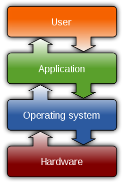

An operating system (OS) is system software that manages computer hardware, software resources,
and provides common services for computer programs.
Time-sharing operating systems schedule tasks for efficient use of the system and may also include accounting software
for cost allocation of processor time, mass storage, printing, and other resources.
